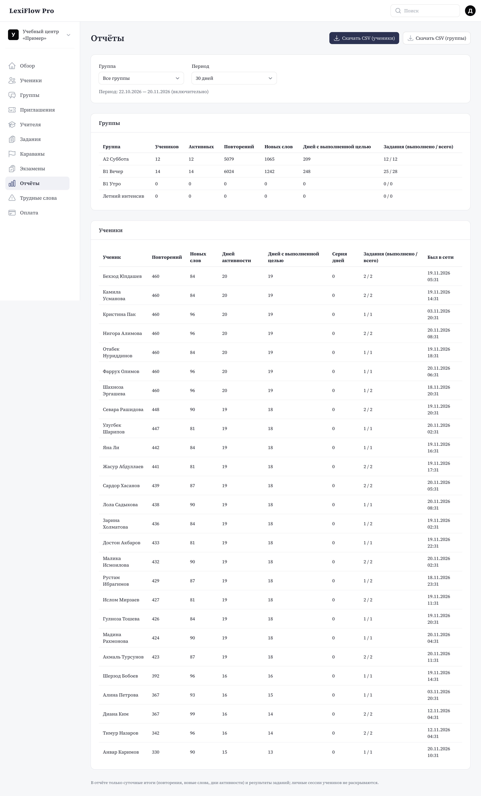
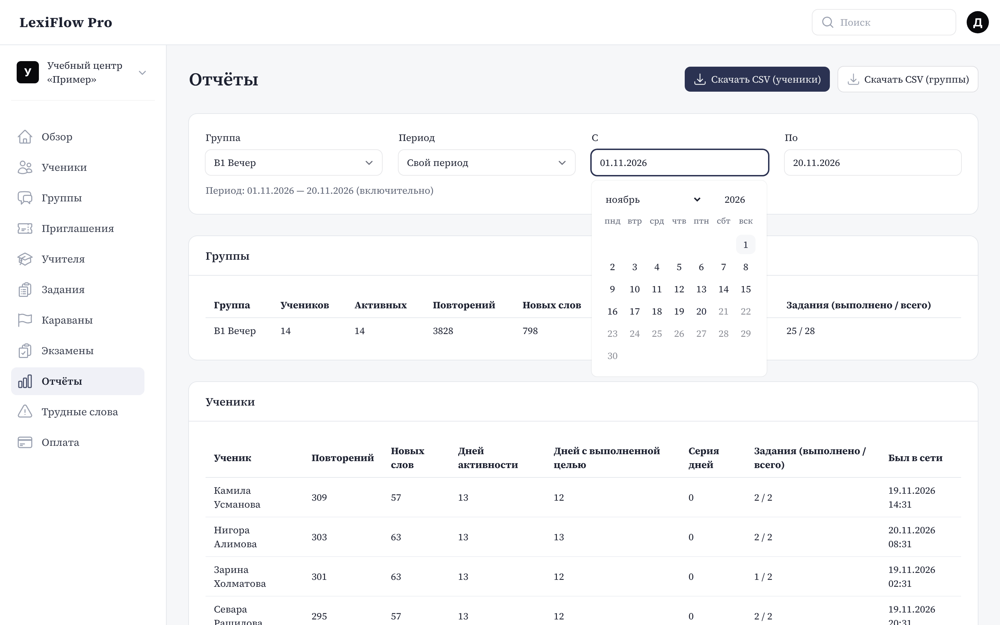
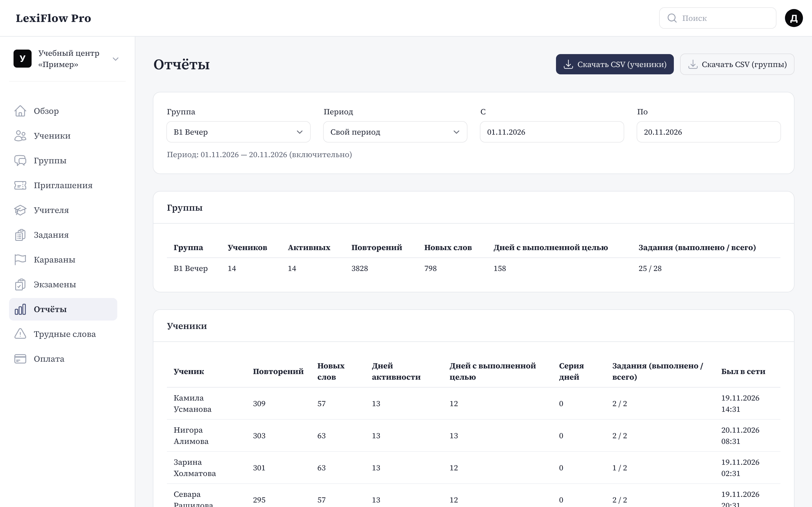

«Отчёты» показывают, как ученики занимались за период: сводка по группам и список по ученикам. Отсюда же выгружают CSV.
Кто имеет доступ: владелец — весь центр; учитель — только свои группы и их учеников.

| Фильтр | Значения |
|---|---|
| Группа | «Все группы» или одна из доступных вам |
| Период | «7 дней», «30 дней» (по умолчанию) или «Свой период» с датами «С» и «По» (обе включаются, не длиннее 366 дней) |
Дни считаются по часовому поясу центра. Под фильтрами всегда написан точный период: «Период: 01.11.2026 — 20.11.2026 (включительно)».


| Колонка | Что значит |
|---|---|
| Повторений, Новых слов | суммы за период |
| Дней активности | дни, когда было хотя бы одно повторение или новое слово |
| Дней с выполненной целью | дни, когда ученик выполнил дневную цель |
| Серия дней | текущая серия; 0, если ученик пропустил вчера |
| Задания (выполнено / всего) | задания, срок которых попал в период; «выполнено» — порог достигнут, с опозданием тоже |
| Был в сети | последний визит |
| Учеников, Активных (по группам) | сколько учеников в группе и сколько из них занимались в периоде |
«Скачать CSV (ученики)» и «Скачать CSV (группы)» выгружают ровно то, что видно в таблицах при текущих фильтрах. В имени файла — вид отчёта, адрес центра и даты периода, например activity-primer-2026-11-01_2026-11-20.csv (ученики) и groups-primer-2026-11-01_2026-11-20.csv (группы). Файл открывается в Excel; заголовки — на языке кабинета. Telegram ID в файл не попадают.